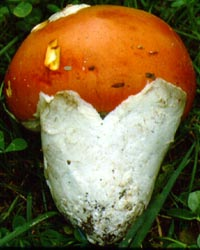
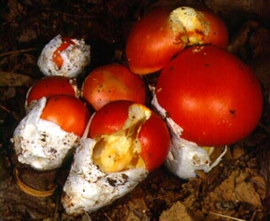
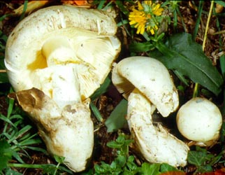
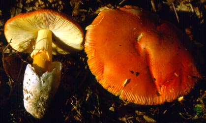
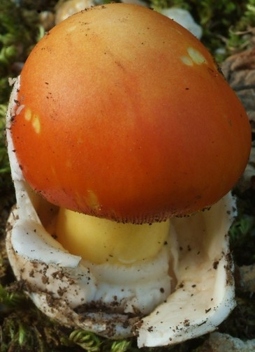
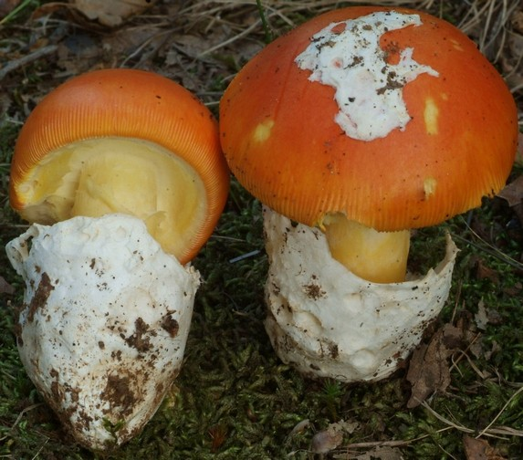

| name | Amanita caesarea |
| name status | nomen acceptum |
| author | (Scop. : Fr.) Pers. |
| english name | "Caesar" |
| images |
 1. Amanita caesarea, southern France.  2. Amanita caesarea, Italy.  3. Amanita caesarea, albino specimen, Italy. .") 4. Amanita caesarea, plate from Bulliard's Herbier de la France (1780-98).  5. Amanita caesarea, southern France.  6. Amanita caesarea, Italy.  7. Amanita caesarea, Italy. |
| intro |
The following is based on the description by Neville and Poumarat (2004) |
| cap |
The cap of Amanita caesarea is 50 - 140 (-190) mm wide, bright orange-red to a duller orange, often becoming more or less paler at maturity, hemispherical then plano-convex, smooth, shiny, somewhat viscid, with a rather short-striate margin (10 - 30% of the radius). The volva is present as large thick white patches. The flesh is white, yellow just below the cap skin, and 20 mm thick above the stem. |
| gills |
The gills are free, 7 - 16 mm broad, yellow, sometimes forked at the margin, with a subflocculose margin. The short gills are attenuate to truncate, plentiful. |
| stem |
The stem is 60 - 130 × 15 - 25 mm, cylindric or enlarging downward, yellow, smooth below the ring, and slightly striated above. The ring is ample, thick, membranous, yellow, slightly striated on the upper side, felted on the lower side. The volva is up to 60 mm tall, saccate, ample, up to 4 or 5 mm thick, connected to the stem only at the base, remote from the stem, membranous, rather tough, white on the outer surface, white or tinted orange on the inner surface except at the point of contact with the stem where it is yellow. The internal limb is placed rather high on the inner surface of the volva. The flesh is firm, stuffed in the middle with cottony material, and yellow. |
| spores |
The spores measure (8.0-) 8.9 - 12.9 (-17.8) × (5.3-) 6.0 - 8.5 (-14.3) µm and are inamyloid and ellipsoid to elongate, occasionally broadly ellipsoid. Clamps are present at bases of the basidia. Spores measured by Neville and Poumarat (2004) are as follows: (8-) 8.5 - 12 (-14) × 6 - 8 (-9) µm and are ellipsoid to elongate, infrequently broadly ellipsoid. |
| discussion |
White and pallid specimens of this species are sometimes assigned to separate forma (A. caesarea f. alba (Gillet) E.-J. Gilbert). My correspondents tell me that white fruiting bodies are only found among pigmented ones. Hence, it seems probable they all arise from the same hymenium; and there is no need to create a separate taxon. Amanita caesarea is a species of the Mediterranean Region, where it is a widely desired edible. In the Americas there are very similar sister species known primarily from Mexico (one from the eastern US lacks the bright colors common to the others); together with A. caesarea, they form a distinct taxonomic group—stirps Caesarea. While it has not yet been proven or disproven that all species of section Vaginatae with rings have a common ancestor, it seems to be the case that the group of taxa with great similarity to Amanita hemibapha (Berk. & Broome) Sacc. (stirps Hemibapha) do indeed have a common ancestor with stirps Caesarea—based on both macroscopic and microscopic morphological evidence—primarily by having (1) similar subhymenia that suggests plant tissue due to being composed of inflated cells; (2) the frequent appearances of red, orange, and yellow as dominant colors; (3) the presence of a felted internal limb of the volva (fragments of which decorate the stem at maturity); (4) spores that are usually broadly ellipsoid to elongate; and (5) temperate to tropic distribution). To date, molecular evidence is also supportive of the hypothesis of a common ancestor. An example of the Mexican cluster is Amanita basii Guzmán & Ram.-Guill. (2001), like its European sister, it is a "market species." The authors of the latter species named four other species that they assigned to stirps Caesarea in the same publication in which A. basii was described. One of these, A. tullossii Guzmán & Ram.-Guill., is based on a misdetermination (see A. jacksonii Pomerl.). Of the remaining three names, A. laurae Guzmán & Ram.-Guill. appears to be distinct, and the last two names, A. yema Guzmán & Ram.-Guill. and A. tecomate Guzmán & Ram.-Guill. appear to be synonyms. Hence, in stirps Caesarea there are five known taxa, one in the old world, and four in the new. This is in contrast to the growing number of recognized taxa in stirps Hemibapha, which will surely soon exceed forty. This disparity along with the comparatively limited distribution of stirps Caesarea suggest that the members of the stirps comprise a relictual group. The reader may also wish to follow up by referencing stirps Calyptroderma.—R. E. Tulloss |
| brief editors | RET |
| name | Amanita caesarea | ||||||||||||||||||||||||||||||||||||||||||||||||||||||||||||||||
| author | (Scop. : Fr.) Pers. 1801. Syn. Meth. Fung. 2: 252. [Misapplication to yellow species lacking volva and marginal striae on pileus by Persoon by reference to Schaeffer. 1770. Fung. Bavar. Palatin. Ratisbon. Nascunt. Icones 3: pl. 247. The figure is referenced under Schaeffer's description (1774. Ibid. 4: 64) of Agaricus caesareus Scop.] | ||||||||||||||||||||||||||||||||||||||||||||||||||||||||||||||||
| name status | nomen acceptum | ||||||||||||||||||||||||||||||||||||||||||||||||||||||||||||||||
| english name | "Caesar" | ||||||||||||||||||||||||||||||||||||||||||||||||||||||||||||||||
| synonyms |
≡Agaricus caesareus Scop. 1772. Fl. Carniola, 2nd ed. 2: 419.
≡Agaricus caesareus Scop. : Fr. 1821. Syst. Mycol. 1: 15.
[gap]
≡Venenarius caesareus (Scop. : Fr.) Murrill. 1913. Mycologia 5: 73. [Also, see N. Amer. Fl. 10: 69]
≡Amanita caesarea var. aurantia Gillet nom. inval. 1874. Champ. (Hyménomyc.) Croiss. France: 34. [Replacement for autonym of type variety. ICBN §11.6, §32.7]
≡Amanita caesarea (Scop.) Gillet. 1874(February). Tabl. Anal. Hyménomyc.: 5. [Superfluous combination.]
≡Agaricus aurantiacus Bull. 1782-1783. Herb. France 3: pl. 120.
[gap] ≡Amanita aurantiaca (Bull.) Pers. 1801. Syn. Meth. Fung. 2: 252. ≡Amanita caesarea f. aurantiaca (Bull.) E.-J. Gilbert nom. inval.. 1918. Gen. Amanita Pers.: 20. [Replacement for autonym of type variety. ICBN §11.6, §32.7] ≡Amanita caesarea f. aurantiaca (Bull.) Veselý nom. inval. 1933. Ann. Mycol. 31(4): 217. [Superfluous combination.] [Replacement for autonym of type variety. ICBN §11.6, §32.7]
[gap]
=Amanita caesarea var. alba Gillet. 1874. Champ. (Hyménomyc.) Croiss. France: 34. ≡Amanita caesarea f. alba (Gillet) E.-J. Gilbert. 1918. Gen. Amanita Pers.: 20. ≡Amanita caesarea f. alba (Gillet) Veselý. 1933. Ann. Mycol. 31(4): 217. [Superfluous combination.]
[gap]
For additional detail of synonymies see Amanita Nomenclator (t.b.d.). The editors of this site owe a great debt to Dr. Cornelis Bas whose famous cigar box files of Amanita nomenclatural information gathered over three or more decades were made available to RET for computerization and make up the lion's share of the nomenclatural information presented on this site. | ||||||||||||||||||||||||||||||||||||||||||||||||||||||||||||||||
| MycoBank nos. | 208468 | ||||||||||||||||||||||||||||||||||||||||||||||||||||||||||||||||
| GenBank nos. |
Due to delays in data processing at GenBank, some accession numbers may lead to unreleased (pending) pages.
These pages will eventually be made live, so try again later.
| ||||||||||||||||||||||||||||||||||||||||||||||||||||||||||||||||
| holotypes | Amanita caesarea var. alba—lacking. | ||||||||||||||||||||||||||||||||||||||||||||||||||||||||||||||||
| lectotypes | Agaricus caesareus—Bulliard. 1780-1798. op. cit. 3: pl. 120. [While this plate did not exist at the time of Scopoli's publication of Agaricus caesareus it is considered part of the original material because (Fries 1821—a sanctioning work) mentions the Bulliard plate as representing A. caesareus.] | ||||||||||||||||||||||||||||||||||||||||||||||||||||||||||||||||
| lectotypifications | Agaricus caesareus—Neville & Poumarat. 2004. Fungi Europaei: 441. | ||||||||||||||||||||||||||||||||||||||||||||||||||||||||||||||||
| intro |
Olive text indicates a specimen that has not been
thoroughly examined (for example, for microscopic details) and marks other places in the text
where data is missing or uncertain. The following material not directly from the protolog of the present taxon and not cited as the work of Dr. Z. L. Yang or another researcher is based upon original research by R. E. Tulloss. | ||||||||||||||||||||||||||||||||||||||||||||||||||||||||||||||||
| pileus | 109 - 170 mm wide, reddish orange over disc, paler toward margin, occasionally completely white to cream (albino form), convex, sometimes with very low and broad umbo in age, ??; context white to yellow, with orange region below pileipellis, 9 - 16 mm thick over stipe; margin short-striate (??R), nonappendiculate; universal veil absent or as robust, white patch. | ||||||||||||||||||||||||||||||||||||||||||||||||||||||||||||||||
| lamellae | free, crowded, yellow in mass, pale yellowish white in side view or (albino form) pale yellowish only between lamellae on underside of pileus, 8 - 12.5 mm broad, subventricose, with edge concolorous or paler; lamellulae truncate to rounded truncate to subtruncate to subattenuate, common or plentiful, of diverse lengths, occasionally arising at stipe rather than pileus margin, unevenly distributed. | ||||||||||||||||||||||||||||||||||||||||||||||||||||||||||||||||
| stipe | 71 - 227 × 24?? - 28 mm, with yellow ground, becoming whitish in lower portion or (in albino form) entirely white, ??, narrowing upward slightly, not flaring at apex, decorated with yellow-orange patches (white in albino form) of limbus internus; context white to whitish to yellow, partially to entirely stuffed with sublongitudinally oriented white cottony fibrillose material, with central cylinder 10 mm wide; partial veil subapical, yellowish white above and below or (in albino form) entirely white except for occasional yellowish tint to edge, membranous, skirt-like, eventually collapsing on stipe, copious, striate above, ?? below, sometimes with bits of limbus internus of universal veil attached to edge; universal veil as saccate volva, obpyriform to ovoid at first, then flaring, narrowing downward but not obconic, lobate, 44 - 89 × 44 - 61 mm, white on outside surface and in interior, white to brownish on inner surface, membranous, thick, with short limbus internus located close to point of attachment near very base of stipe or up to 20 mm above point of attachment, ??. | ||||||||||||||||||||||||||||||||||||||||||||||||||||||||||||||||
| odor/taste | not recorded for material examined. | ||||||||||||||||||||||||||||||||||||||||||||||||||||||||||||||||
| macrochemical tests |
none recorded for material examined. | ||||||||||||||||||||||||||||||||||||||||||||||||||||||||||||||||
| pileipellis | 35 - 75 µm thick, yellow to orange-yellow except for narrow colorless region at surface (few hyphal diameters thick), not clearly separated into supra- and subpellis, partially gelatinized only at very surface, with gelatinization sometimes very limited or absent under volval patches even after sporulation begins; filamentous, undifferentiated hyphae 2.5 - 12.7 µm wide, branching, in narrow fascicles or singly, interwoven without dominant orientation in region of disc, still markedly criss-crossing near margin although with plentiful hyphae subradially oriented; vascular hyphae not observed. | ||||||||||||||||||||||||||||||||||||||||||||||||||||||||||||||||
| pileus context | filamentous, undifferentiated hyphae 1.5 - 5.0 µm wide, branching, interwoven in open lattice structure, in fascicles and singly; acrophysalides thin-walled, subfusiform to narrowly clavate to clavate to broadly clavate, up to 56 × 18.0 µm; vascular hyphae 2.5 - 9.5 µm wide, branching, infrequent. | ||||||||||||||||||||||||||||||||||||||||||||||||||||||||||||||||
| lamella trama | bilateral, with angle of divergence ??; wcs = 70± µm (moderate rehydration); central stratum including inflated elongate intercalary elements (subfusiform to broadly subfusiform to clavate, up to 66 × 24 µm) sometimes in chains; subhymenial base dominated by curving narrowly clavate to clavate to subfusiform to narrowly ovoid inflated cells up to 85 × 25 µm, singly or in chains of two, often intercalary; filamentous, undifferentiated hyphae 2.1 - 6.3 µm wide, branching, plentiful, often constricted at septa, sometimes with yellowish subrefractive walls; terminal, divergent inflated cells of same size and shape as clavate intercalary cells of subhymenial base; vascular hyphae not observed; clamps present on both yellowish and colorless hyphae, occasional(?). | ||||||||||||||||||||||||||||||||||||||||||||||||||||||||||||||||
| subhymenium | wst-near = 85 - 95 µm (good rehydration); wst-far = 100 - 115 µm (good rehydration); pseudoparenchymatous, with inflated cells in 4 to 5 (to 6) irregular layers below bases of longest basidia, with inflated cells up to 19.2 × 15.5 µm and having branching relationship often visible, with basidia arising from inflated cells; clamps present. | ||||||||||||||||||||||||||||||||||||||||||||||||||||||||||||||||
| basidia | 46 - 72 × 8.9 - 13.0 µm, dominantly 4-, occasionally 2- or 1-sterigmate, with sterigmata up to 12.7 × 2.7 µm; clamps common, sometimes unevenly distributed. | ||||||||||||||||||||||||||||||||||||||||||||||||||||||||||||||||
| universal veil | On pileus, upper surface: compressed layer of gelatinized to partially gelatinized hyphae 15 - 25 µm thick. On pileus, interior: as on stipe based except more vertically compressed. On pileus, lower surface: compressed layer of partially gelatinized hyphae 15± µm thick, yellow to orange-yellow. On stipe base, exterior surface: 15± µm thick, comprising entirely partially gelatinized and collapsed hyphae, in many places with dominant longitudinal orientation, everwhere with some criss-crossing fascicles or single hyphae, in some regions almost entirely lacking longitudinally oriented hyphae and with gaps through which near surface portion of interior layer visible; filamentous, undifferentiated hyphae 2.2 - 8.9 µm wide, branching; vascular hyphae not observed. On stipe base, interior: filamentous, undifferentiated hyphae 1.4 - 7.4 µm wide, branching, plentiful, singly and in fascicles interwoven in more or less open lattice structure; inflated cells terminal singly or with subterminal subfusiform cell (e.g., 91 × 29 µm), common to plentiful away from surfaces, locally dominant (clustered), subglobose (e.g., 75 × 68 µm) or narrowly clavate (e.g., 107 × 43 µm) or clavate to elongate ellipsoid to ellipsoid to ovoid (up to 74 × 50 µm), thin-walled; vascular hyphae not observed. On stipe base, inner surface: like interior, partially gelatinized. | ||||||||||||||||||||||||||||||||||||||||||||||||||||||||||||||||
| stipe context | longitudinally acrophysalidic; filamentous, undifferentiated hyphae 2.5 - 12.1 µm wide, branching, plentiful, dominating at exterior surface; acrophysalides dominating in interior, ranging from narrow (up to 203 × 43 µm) to broad (up to 184 × 62 µm), thin-walled, becoming smaller toward exterior surface; vascular hyphae not observed; clamps infrequent(?). | ||||||||||||||||||||||||||||||||||||||||||||||||||||||||||||||||
| partial veil | filamentous, undifferentiated hyphae 1.5 - 6.3 (-11.6) µm wide, branching, plentiful to locally dominant, forming irregular lattice structure, more or less collapsed and partially gelatinized, on upper surface, there forming a subgelatinized to gelatinized layer (suggesting a pileipellis) up to three hyphal diameters thick with nest-like depressed regions in which partially gelatinized and collapsed inflated cells present or from which such inflated cells lost, below upper surface largely radially oriented but with some criss-crossing hyphae and occasional fascicles; inflated cells plentiful to locally dominant below upper surface layer, terminal singly, smallest and least dense toward bottom surface, clavate to broadly clavate (up to 102 × 63± µm) or subventricose (e.g., 103 × 48 µm) or elongate ellipsoid (e.g., 83 × 48 µm), thin-walled; vascular hyphae not observed; clamps present. | ||||||||||||||||||||||||||||||||||||||||||||||||||||||||||||||||
| lamella edge tissue | not described. | ||||||||||||||||||||||||||||||||||||||||||||||||||||||||||||||||
| basidiospores | [180/7/6] (8.0-) 8.9 - 12.9 (-17.8) × (5.3-) 6.0 - 8.5 (-14.3) µm, (L = 9.7 - 11.0 (-11.4) µm; L’ = 10.6 µm; W = (6.3-) 6.7 - 7.6 µm; W’ = 7.1 µm; Q = (1.21-) 1.30 - 1.70 (-2.0); Q = (1.40-) 1.47 - 1.59; Q’ = 1.50), hyaline, colorless, thin-walled, smooth, inamyloid, ellipsoid, occasionally elongate, occasionally adaxially flattened, often subventricose, sometimes expanded at one end, with some giant spores present on hymenia in early stages of sporulation; apiculus sublateral, low, truncate conic to cylindric; contents monoguttulate with or without additional small granules; ?? in deposit. | ||||||||||||||||||||||||||||||||||||||||||||||||||||||||||||||||
| ecology | Italy: Solitary to gregarious. At 200 - 800 m elev. Under Castanea and Quercus or with Pinus and Arbutus or with P. pinaster and Cistus or with Q. suber and Cistus or in unspecified forest type with soil pH = 6 - 6.5. | ||||||||||||||||||||||||||||||||||||||||||||||||||||||||||||||||
| material examined |
ITALY:
COSENZA—Atri, Santa Zaccaria, 10.x.2008 C. Lavorato 081010-23 (in herb. C. Lavorato; RET 427-1), 10.x.2009 C. Lavorato 091010-21 (in herb. Lavorato; RET 450-3); San Demetrio Corone, 30.vii.1994 C. Lavorato 940730-36 (in herb. C. Lavorato; RET 142-9).
LIGURIA—ca. Genova, | ||||||||||||||||||||||||||||||||||||||||||||||||||||||||||||||||
| citations | —R. E. Tulloss | ||||||||||||||||||||||||||||||||||||||||||||||||||||||||||||||||
| editors | RET | ||||||||||||||||||||||||||||||||||||||||||||||||||||||||||||||||
Information to support the viewer in reading the content of "technical" tabs can be found here.
| name | Amanita caesarea |
| bottom links |
[ Keys & Checklists ] [ Draft description of, & key to, sect. Caesareae ] |
| name | Amanita caesarea |
| bottom links |
[ Keys & Checklists ] [ Draft description of, & key to, sect. Caesareae ] |
Each spore data set is intended to comprise a set of measurements from a single specimen made by a single observer; and explanations prepared for this site talk about specimen-observer pairs associated with each data set. Combining more data into a single data set is non-optimal because it obscures observer differences (which may be valuable for instructional purposes, for example) and may obscure instances in which a single collection inadvertently contains a mixture of taxa.

Text and User-Generated Sporographs are published under the Creative Commons License.

In the case of a taxon page, image credits are on the 'image' tab.
{kind=link}
{kind=link}
{kind=link}
{kind=link}
{kind=link}
{kind=link}
{kind=link}